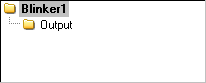

When you compiled Blinker1, the Object View pane updated to indicate the application’s structure. The Object View is in the upper left corner of the Propeller Tool if you have the Integrated Explorer pane open; this is what what it should look like now.

Blinker1 Object View
The Object View updates itself each time an application is successfully compiled to show you the logical structure of that application. It is necessary to check the Object View once in a while to troubleshoot or to verify proper compilation.
Your entire application is displayed in the Object View, or at least what it looked like after the last successful compile. You can also use it to explore the application. For example, pointing the mouse at each object in the Object View gives you hint information about that object. Left-clicking each of those objects either opens them up or switches the active edit tab to that object. Right-clicking each of those objects does the same as left-clicking but it makes the object switch to Documentation view instead of Full Source view.
Propeller Help Version 1.2
Copyright © Parallax Inc., dba Parallax Semiconductor
6/17/2011